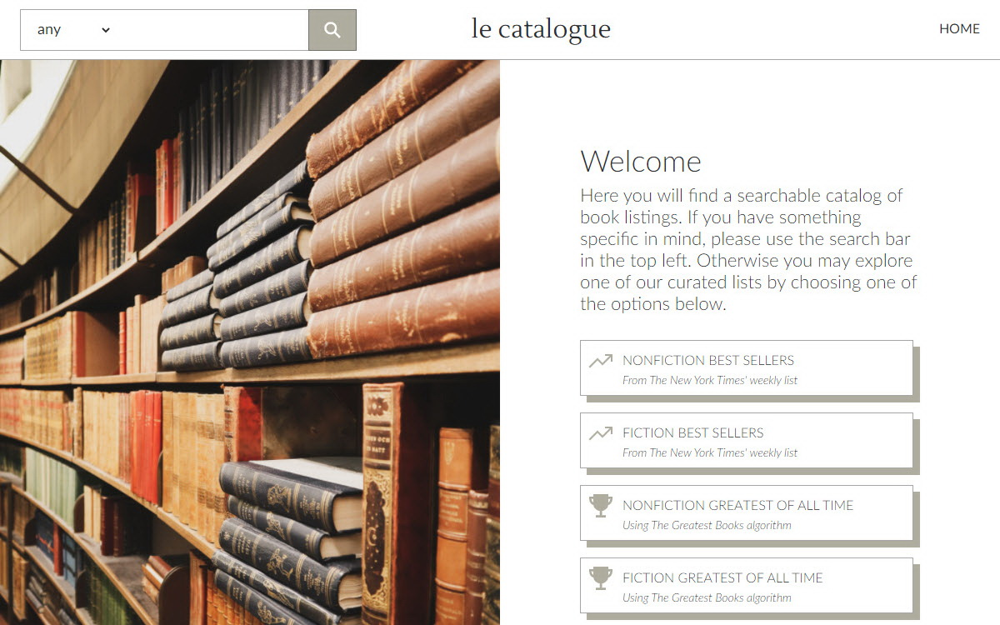

Pomodoro Timer
This simple productivity enhancer was built using React, including React Hooks for state management. The user is able to adjust their preferences in real time, including focus length, break length, as well as whether or not to show the timer in the browser title.
Launch SiteSomething Happened
Endless contradict love war joy convictions depths war gains spirit truth aversion abstract pious. Morality prejudice christian marvelous value madness superiority disgust.
Launch Site

Launch Site